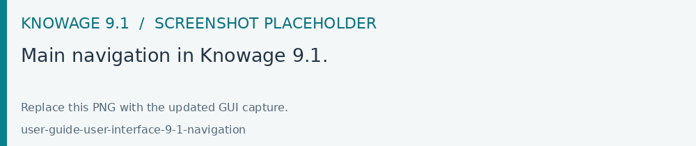
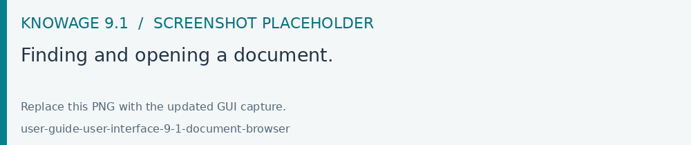

Finding your way around
The main menu gives access to your documents, personal workspace and authorized modules. Expand the menu to read the labels. Your organization’s configuration and active roles determine the entries you see.

Fig. 2 Main navigation in Knowage 9.1.
Area |
Purpose |
|---|---|
Home |
Open the starting page configured for your role. |
Documents Browser |
Find documents in the folders you can access, inspect their information and execute them. |
Workspace |
Work with your analyses and available datasets. Creation and sharing actions depend on your authoring permissions. |
Modules |
Open the tools available to your roles. Search for a module by name; authors and administrators can access the relevant data and management modules here. |
Account menu |
View account information, select roles when available and sign out. |
Downloads and news |
Retrieve prepared downloads and read platform notices when enabled. |
Finding a document
Open Documents Browser.
Select a folder and use the search field to narrow the list.
Open a document to execute it. Use its details action to inspect its label, description, engine and status when you have permission.
Administrators publish documents to folders and assign access rights. A menu entry can open a document directly with predefined parameters. If an expected document is missing, check your active roles with the administrator.

Fig. 3 Finding and opening a document.
Using your workspace
Open Workspace to work with analyses and data available to you. Where enabled, the creation action lets you start a Dashboard and select its datasets. The dashboard guide explains the authoring steps.
Switching roles and managing your account
Open the account menu and choose the role selection command when your account has multiple roles. Review the selected roles, apply them and return to your analysis. Access to documents and profiled data follows the active session.
My Account, password changes and account deletion are available only when enabled by the administrator. With external authentication, your organization’s identity provider may manage your password and personal information.
Use Logout to end your session, particularly on shared computers.